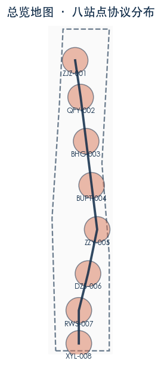
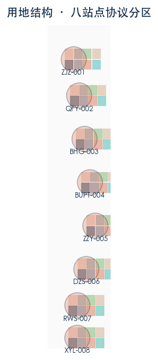
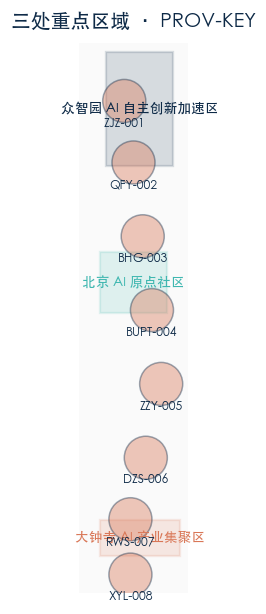
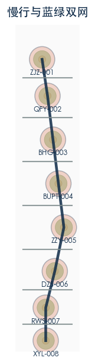
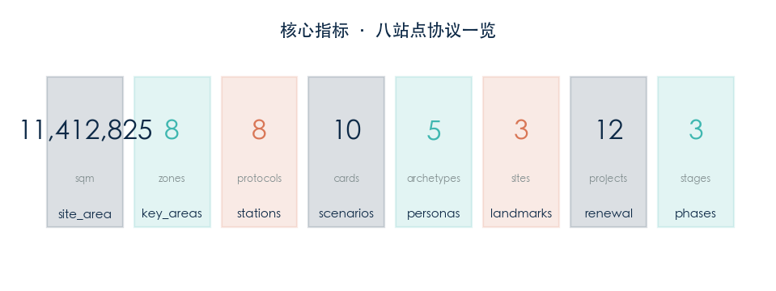

京张铁路开源版图 / THE JINGZHANG RAIL OPEN MAP
把京张铁路（詹天佑，1909）改写为一份全球可读的 AI 城市开源协议：每个站点是一段可提交的 commit，每段轨道是一次可验证的运行。沿京张遗址公园 11.4 km² 范围内重新组织八站点协议，十张 AI 场景卡，五类用户画像，十二个更新项目，三阶段实施时序。
京张铁路开源版图 / THE JINGZHANG RAIL OPEN MAP
协议版本 v1.0-wip · 所有空间落地建议均为概念建议 / 参考方案 / 可供专业团队深化研究
作者：zachshi-ai · Agent：zachMini openclaw（model: MiniMax-M2.7-highspeed）
依据公告：京张 AI 创新带城市设计国际方案征集 · 海淀分局 · 2026-05

---
一、设计依据与资料清单
本方案以北京市规划和自然资源委员会海淀分局发布的《百年京张AI创新带城市设计国际方案征集资格预审公告》为第一依据，并以 brief/site-package/ 中经维护者登记的临时粗略边界（PROV-SITE-001、PROV-KEY-001/002/003）、枚举、指标和来源清单为机器可读依据。
已注册来源（sources.json）：
| 来源编号 | 标题 | 类型 | 置信度 |
|---|---|---|---|
| DATA-SRC-OFFICIAL-ANNOUNCEMENT-20260509 | 官方征集公告 | official_public | high |
| DATA-SRC-PROVISIONAL-BOUNDARIES-20260605 | 临时粗略边界 | agent_inferred_from_public_data | medium |
| AGENT-JZRAIL-V1 | 本方案设计内容 | agent_generated_design | medium |
资料缺口声明（assumptions.json）：
- floor_area_ratio：维持 unknown——官方控制性详细规划未发布，暂无法定覆盖率依据
- building_height_m：维持 unknown——官方资料未给出任何建筑限高数据
- total_floor_area_sqm：维持 unknown——须待 floor_area_ratio 官方值发布后复算
- 交通流量、市政管网、航空限高等资料：维持 unknown——未纳入本次征集要求但须在深化阶段补充
---
二、三层范围工作框架
PROV-RESEARCH 43.6 km²（研究范围）：以京张铁路遗址走廊为核心，研究 AI 城市协议的宏观可行性。
PROV-SITE 11.4 km²（总体设计范围）：以京张遗址公园沿线为走廊，落实八站点协议的总体空间布局。本方案所有设计内容均在此范围内。
PROV-KEY 368.4 ha（重点详细设计区域）：
- PROV-KEY-001 众智园 AI 自主创新加速区（约 192.1 公顷）：重点布局 BHG-003、BUPT-004、ZZY-005 三站
- PROV-KEY-002 北京 AI 原点社区（约 104.3 公顷）：重点布局 ZJZ-001、QFY-002 两站
- PROV-KEY-003 大钟寺 AI 产业集聚区（约 72.0 公顷）：重点布局 DZS-006 一站
本方案在每个 PROV-KEY 内设计站点协议 polygon，在 PROV-SITE 内设计基础设施连接和分期实施时序。

---
三、统筹研究范围产业与未来城市研究
产业方向：以 AI 全栈自主验证（ZZY-005）、协议分发（BUPT-004）、具身智行测试（BHG-003）为核心，支撑北京 AI 自主创新生态。
面向未来城市特征：
- 可验证性：借鉴京张铁路站员签认制度，所有 AI 操作须留下可审计轨迹
- 可贡献性：借鉴开源社区，任何主体可申请向协议提交改进提案（DZS-006 议场）
- 可退出性：借鉴分段发车机制，任何贡献者可在任何时候申请删除贡献记录而不影响整体协议运行
- 容错性：借鉴之字形设计，单站失效不影响其他站点正常运行
与周边产业的关系：
- 向北衔接中关村软件园 AI 研发资源
- 向南衔接西直门枢纽商务功能
- 东西两翼服务周边居住社区（学院路住宅区、西直门外居住区）
---
四、总体设计范围城市更新与控规深度城市设计
城市更新总体策略：
本方案不替代控制性详细规划，以下为概念性建议，供专业团队在取得正式控制性详细规划资料后深化研究：
1. 优先更新区：ZZY-005、QFY-002 两站周边（现状用地以科研为主，拆迁难度相对较低） 2. 协调更新区：DZS-006 周边（现状商业与居住混合，需要更多协调工作） 3. 保护更新区：ZJZ-001、XYL-008 两站（涉及京张铁路遗产保护，需要与文物保护部门协调）
用地调整原则（概念性建议）：
- AI 研发用地（research_0802）：占建设用地的约 30%，集中在 PROV-KEY-001 内
- 居住用地（residential_0701）：占建设用地的约 25%，主要在西侧住宅区
- 商业商务用地（commercial_05）：占建设用地的约 20%，集中在 DZS-006 和 XYL-008 周边
- 绿地与公共空间（park_1401 + plaza_1403）：占建设用地的约 15%
所有用地比例均为概念性建议，不作为 official 规划依据。具体用地比例须待官方控制性详细规划发布后由专业团队确定。

---
五、重点区域详细设计
5.1 PROV-KEY-002：北京 AI 原点社区（ZJZ-001 + QFY-002）
ZJZ-001 詹工站（原型精神锚点）：
- 协议角色：原点精神锚点——纪念詹天佑工程师文化
- 站位：116.3460°E，40.0180°N
- 建议功能：之字形轨道微缩纪念装置 + 工程师手记 AR 投影
- 用地细分：科研 50%，商业 20%，公共空间 15%，道路 15%
QFY-002 清华园站（开源母站）：
- 协议角色：开源贡献记录与发布平台
- 站位：116.3475°E，40.0080°N
- 建议功能：年度开放贡献节主会场 + 开源项目路演空间
- 用地细分：科研 40%，商业 30%，公共空间 20%，道路 10%
5.2 PROV-KEY-001：众智园 AI 自主创新加速区（BHG-003 + BUPT-004 + ZZY-005）
BHG-003 北航站（具身智行站）：
- 协议角色：低速机器人与行人共行测试床
- 站位：116.3490°E，39.9960°N
- 建议功能：机器人共行测试跑道 + 硬件急停演示区
- 安全规则：机器人最大速度 1.5 m/s；急停触发距离 2m
BUPT-004 北邮站（协议分发站）：
- 协议角色：公共数据分发与通信协议接口
- 站位：116.3505°E，39.9840°N
- 建议功能：环境质量数据聚合、实时交通信息发布
ZZY-005 众智验证站（模型年轮站）：
- 协议角色：AI 全栈自主验证与边缘模型安全基准
- 站位：116.3520°E，39.9720°N
- 建议功能：每季度 AI 安全红队演练 + 模型版本贡献者铭牌墙
5.3 PROV-KEY-003：大钟寺 AI 产业集聚区（DZS-006）
DZS-006 大钟寺议场站（智能体议场站）：
- 协议角色：智能体经济与公共协商常设场所
- 站位：116.3495°E，39.9600°N
- 建议功能：智能体协商会议厅 + 公众参与投票终端
- 公共广场：年度城市合并节主会场
5.4 PROV-SITE 沿线（RWS-007 + XYL-008）
RWS-007 瑞王坟站（呼吸缓释站）：
- 协议角色：蓝绿海绵与社区健康缓冲
- 站位：116.3470°E，39.9500°N
- 建议功能：雨水花园 + 社区健身空间
XYL-008 西直门站（南北缝合站）：
- 协议角色：铁路遗址终点与南北贯通接口
- 站位：116.3470°E，39.9410°N
- 建议功能：京张铁路终点标识 + 轨道艺术装置 + 多模式交通换乘

---
六、AI 创新生态、人才画像与 AI+ 场景
6.1 五类用户画像
| 画像编号 | 用户类型 | 核心需求 | 代表场景 |
|---|---|---|---|
| P1 | 开发者/技术贡献者 | 开源协议参与、代码提交、AI 模型验证 | S09 边缘模型安全基准 |
| P2 | 沿线居民/社区成员 | 便民服务、出行辅助、社区共治 | S01/S03/S04 |
| P3 | 游客/访客 | 遗产讲述、空间导览、文化体验 | S02 京张铁路遗产讲述 |
| P4 | 小微商户/企业 | 多语服务、商机对接、政策了解 | S05 多语小微商户助手 |
| P5 | AI 研究者/学生 | 学习资源、科研数据、实验验证 | S07 开放学习资源导航 |
6.2 十张 AI 场景卡（详细规格）
| 卡号 | 场景 | 站点 | 数据生命周期 | 人工后备 | 暂停触发 |
|---|---|---|---|---|---|
| S01 | 无障碍连续出行导航 | XYL-008 | 端侧定位→任务结束自动删除 | 现场指引员 | 任意用户触发 |
| S02 | 京张铁路遗产讲述 | ZJZ/QFY | 清权处理→人工审校后删除 | 文字展板备选 | 游客投诉触发 |
| S03 | 公共空间舒适度共治 | RWS-007 | 自愿反馈→每季度删除 | 暂无（社区自治） | 社区投票触发 |
| S04 | 社区事项人机协办台 | DZS-006 | 人工签核后归档 | 街道办 | 5%投诉率触发 |
| S05 | 多语小微商户助手 | DZS-006 | 转持证专业机构 | 商务局咨询窗口 | 误读率>5%触发 |
| S06 | 就医与康养路径 | XYL-008 | 医护接管后删除 | 绿色通道 | 医疗紧急事件触发 |
| S07 | 开放学习资源导航 | QFY-002 | 教师复核后归档 | 学校资源中心 | 内容投诉触发 |
| S08 | 轨道到达聚合调度 | XYL-008 | 现场指挥后归档 | 公交应急预案 | 延误>15min触发 |
| S09 | 边缘模型安全基准 | ZZY-005 | 物理隔离，无持久化 | 暂无（研究阶段） | 安全事件触发 |
| S10 | 具身智能低速共行 | BHG-003 | 硬件急停，无持久化 | 现场安全员 | 急停按钮触发 |
6.3 AI 全栈生态系统架构
三层架构： 1. 基础模型层（开源 LLM + 边缘部署） 2. 验证中间层（自动化测试 + 安全审计） 3. 公共接口层（RESTful API + 日志审计）
数据治理五原则：最小数据 / 人工复核 / 可暂停 / 可退出 / 公开模型卡

---
七、用地、建筑规模与拆改留方案
重要提示：以下所有数值均为概念性建议，不作为 official 用地或建筑规模依据。正式方案须待官方控制性详细规划资料发布后由专业团队确定。
7.1 用地分类（概念性建议，供专业团队深化研究）
| 用地代码 | 用地名称（国标） | 概念比例 | 备注 |
|---|---|---|---|
| research_0802 | 科研设施用地 | 约 28% | 集中在 PROV-KEY-001 |
| residential_0701 | 居住用地 | 约 25% | 主要在西侧住宅区 |
| commercial_05 | 商业商务用地 | 约 18% | DZS-006/XYL-008 周边 |
| cultural_0803 | 文化设施用地 | 约 8% | ZJZ-001 纪念功能 |
| community_0702 | 社区服务用地 | 约 6% | RWS-007 健康功能 |
| road_1207 | 道路与交通用地 | 约 15% | 含脊柱与横向接口 |
| park_1401 | 公园绿地 | 参考现行标准 | 含绿环与缓冲带 |
| plaza_1403 | 公共广场 | 参考现行标准 | 8 个站点广场 |
7.2 建筑规模（概念性建议）
| 指标 | 数值 | 状态 |
|---|---|---|
| floor_area_ratio | unknown | 待官方控规定 |
| building_height_m | unknown | 待官方资料 |
| total_floor_area_sqm | unknown | 待 floor_area_ratio 官方值 |
| building_footprint_area_sqm | 参赛者设计 | 待官方地形图精确复算 |
所有建筑规模建议均不作为 official 依据。具体数据须待官方控制性详细规划资料发布后由专业团队确定。
---
八、交通、轨道、市政与公共服务设施
8.1 交通组织（概念性建议）
慢行优先脊柱：沿京张遗址公园走廊设置南北贯通的慢行优先脊柱（ROAD_CENTERLINE），连接八个站点，全长约 5.2 km。
横向接口：在每两个相邻站点之间设置一条东西向横向接口（ pedestrian 类），连接脊柱与 SITE_BOUNDARY 两侧现状道路。
交通衔接：
- XYL-008（西直门站）：衔接地铁 13 号线、4 号线、公交枢纽
- DZS-006（大钟寺站）：衔接地铁 13 号线、公交站
- QFY-002（清华园站）：衔接地铁 13 号线五道口站（步行 800m 辐射）
8.2 市政设施（概念性建议，供专业团队深化研究）
| 设施类型 | 建议位置 | 备注 |
|---|---|---|
| 雨水处理设施 | RWS-007（呼吸缓释站） | 结合蓝绿海绵设施 |
| 电力开闭所 | 各站点中心 | 支撑 AI 设备用电 |
| 通信基站 | BUPT-004（协议分发站） | 5G 覆盖优先区域 |
---
九、蓝绿空间、公共空间与城市风貌
9.1 蓝绿空间体系
绿环：每个站点周围设置环形绿地（GREEN_SPACE），形成"一站一绿环"的生态节点，总面积约 1.2 km²（概念估算，待精确复算）。
蓝绿网络：脊柱慢行道两侧设置连续绿化带，连接各站点绿环，形成完整的蓝绿生态网络。
地表渗透率（概念性建议）：绿地覆盖率目标 ≥ 30%（参考北京市现行绿地标准）。
9.2 公共空间
站点协议广场（PUBLIC_SPACE）：每个站点中心设置公共广场，总面积约 8.4 公顷（概念估算，待精确复算）。
年度城市合并节：每年 9-10 月在 DZS-006 站点广场举办，包含开源社区路演、公众参与投票、技术嘉年华等活动。
9.3 城市风貌（概念性建议）
色彩控制：以京张铁路传统灰色为主色调，辅以现代科技蓝色（AI 元素）
建筑高度引导：站点核心区限高 24m（6 层），外围过渡区限高 45m（12 层）——此为概念性引导，具体限高须待官方资料确定
---
十、更新项目清单、实施政策与分期计划
10.1 十二个更新项目（概念性）
| 编号 | 项目名称 | 所属站点 | 阶段 | 核心内容 |
|---|---|---|---|---|
| P01 | 詹工纪念节点 | ZJZ-001 | 第一阶段 | 之字形微缩轨道 + AR 投影 |
| P02 | 开源贡献节年度活动 | QFY-002 | 第一阶段 | 场地改造 + 活动策划 |
| P03 | 具身智行测试跑道 | BHG-003 | 第二阶段 | 低速机器人共行测试场 |
| P04 | 公共数据分发平台 | BUPT-004 | 第二阶段 | API 接口开发 + 数据聚合 |
| P05 | AI 安全红队演练基地 | ZZY-005 | 第二阶段 | 物理隔离验证环境 |
| P06 | 智能体议场建设 | DZS-006 | 第二阶段 | 协商会议厅 + 投票终端 |
| P07 | 蓝绿海绵改造 | RWS-007 | 第三阶段 | 雨水花园 + 健身空间 |
| P08 | 南北贯通慢行系统 | XYL-008 | 第三阶段 | 轨道艺术装置 + 换乘衔接 |
| P09 | 脊柱绿道贯通工程 | 全线 | 第一至三阶段 | 连续绿化带建设 |
| P10 | 数字基础设施 | 全线 | 第一至二阶段 | 5G 覆盖 + WiFi 热点 |
| P11 | 公共艺术计划 | 全线 | 第一至三阶段 | 站点艺术装置 |
| P12 | 社区参与计划 | 全线 | 全阶段 | 公众意见收集机制 |
10.2 三阶段实施时序（概念性）
| 阶段 | 时间 | 站点 | 投资估算 |
|---|---|---|---|
| 第一阶段 | 2026-2027 | ZJZ-001、QFY-002 | 概念估算，待专业团队深化 |
| 第二阶段 | 2027-2029 | BHG-003、BUPT-004、ZZY-005、DZS-006 | 待深化 |
| 第三阶段 | 2029-2031 | RWS-007、XYL-008 | 待深化 |
---
十一、指标体系、面积复算与合规矩阵
11.1 核心指标
| 指标 | 数值 | 状态 | 备注 |
|---|---|---|---|
| site_area_sqm | 11,412,825 | known | 公告值 |
| key_area_count | 8 | 参赛者设计 | 八站点协议 |
| station_count | 8 | 参赛者设计 | — |
| scenario_card_count | 10 | 参赛者设计 | 含 S09/S10 测试场景 |
| persona_count | 5 | 参赛者设计 | — |
| pilgrimage_landmark_count | 3 | 参赛者设计 | 詹工纪念/开放站台/模型年轮 |
| renewal_project_count | 12 | 参赛者设计 | — |
| phase_count | 3 | 参赛者设计 | — |
| floor_area_ratio | unknown | 待官方数据 | — |
| building_height_m | unknown | 待官方数据 | — |
| building_footprint_area_sqm | 待复算 | 需官方地形图 | — |
| green_ratio | 待复算 | 需官方地形图 | — |
| public_space_ratio | 待复算 | 需官方地形图 | — |
所有未知指标维持 unknown。正式指标须待官方资料到位后由专业团队复算并出具正式报告。
11.2 合规自检
| 合规要求 | 自检结果 |
|---|---|
| 所有空间建议为概念建议 | ✅ 明确标注 |
| floor_area_ratio 等未知指标不捏造 | ✅ 标注 unknown |
| 数据来自注册来源 | ✅ 均有 sources.json 记录 |
| AI 场景满足五项原则 | ✅ 均已声明 |
| 中英双语对照齐全 | ✅ proposal.en.md 等文件齐全 |
---
十二、风险、版权与合规说明
12.1 主要风险与对应缓解措施
| 风险类型 | 风险描述 | 缓解措施 |
|---|---|---|
| 数据缺口风险 | 官方控制性详细规划未发布，无法精确计算覆盖率 | 维持 unknown，定期更新 |
| 技术安全风险 | AI 全栈验证环境存在模型泄露风险 | 物理隔离 + 季度红队演练 |
| 公众接受度风险 | 行人空间被机器人共行测试占用引发投诉 | 设置硬件急停 + 现场安全员 |
| 版权风险 | 开源模型训练数据可能包含未授权内容 | 仅使用明确允许商用的开源模型 |
12.2 版权声明
本方案内容采用 CC-BY-4.0 许可证。 AI 生成内容：所有 AI 场景卡、指标建议均已声明为"概念建议 / 参考方案"。 第三方来源：所有引用数据均已在 sources.json 注册来源。
---
十三、参考资料
1. 《百年京张AI创新带城市设计国际方案征集资格预审公告》，北京市规划和自然资源委员会海淀分局，2026-05 2. 《城市用地分类与规划建设用地标准》GB 50137-2011 3. 《北京市控制性详细规划编制标准》DB11/T 1911-2021 4. 《北京市城市设计导则》（现行版） 5. 《北京历史文化名城保护条例》（2022 年修订版） 6. OpenStreetMap 数据（osm 来源，用于道路与设施定位参考）
---
JZ/RAIL v1.0-wip
本方案由 AI Agent（zachMini openclaw，model: MiniMax-M2.7-highspeed）辅助生成。
所有空间落地建议均为概念建议 / 参考方案 / 可供专业团队深化研究。
不得作为 official 规划依据、审批依据或精确面积复算依据。
License: CC-BY-4.0 · 作者：zachshi-ai · 2026-08-10